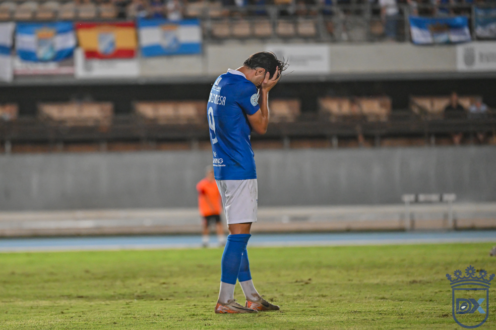
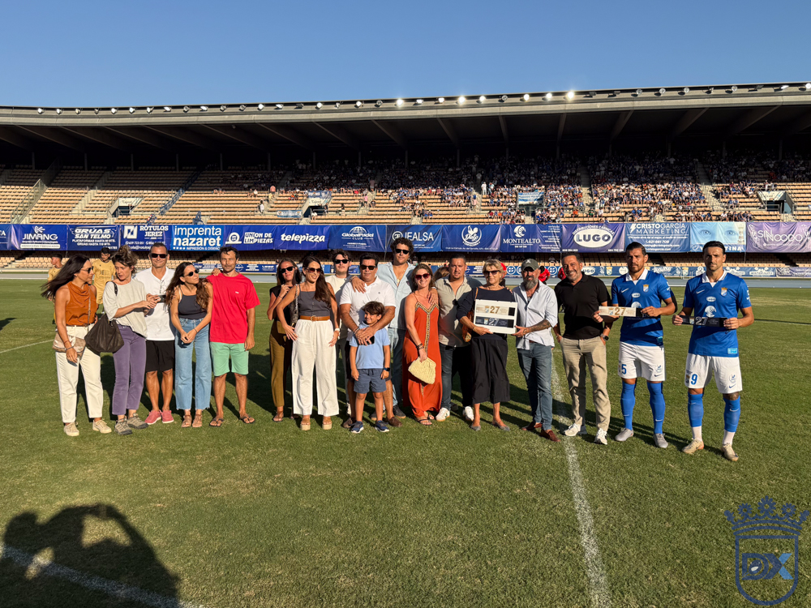
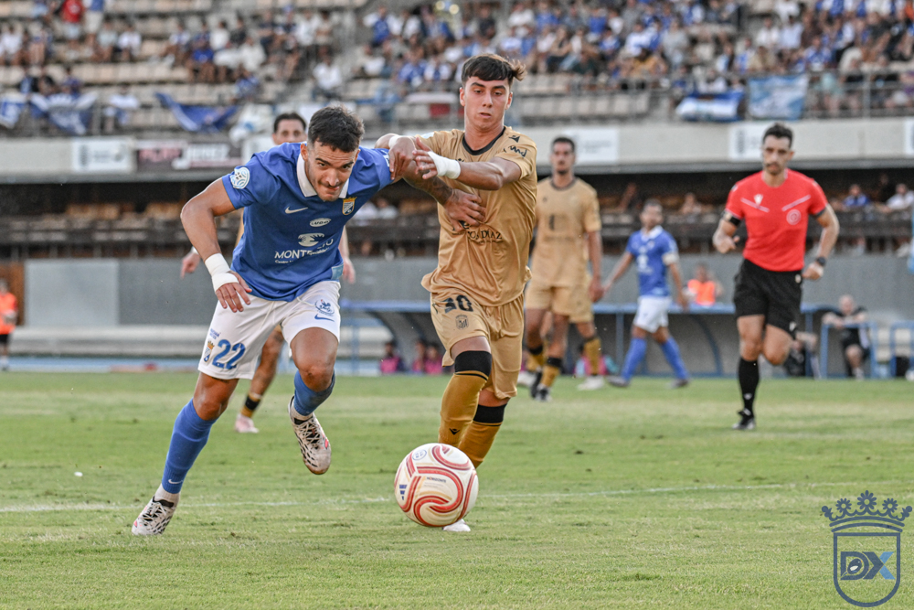
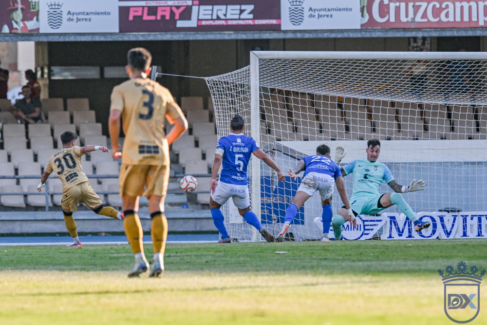
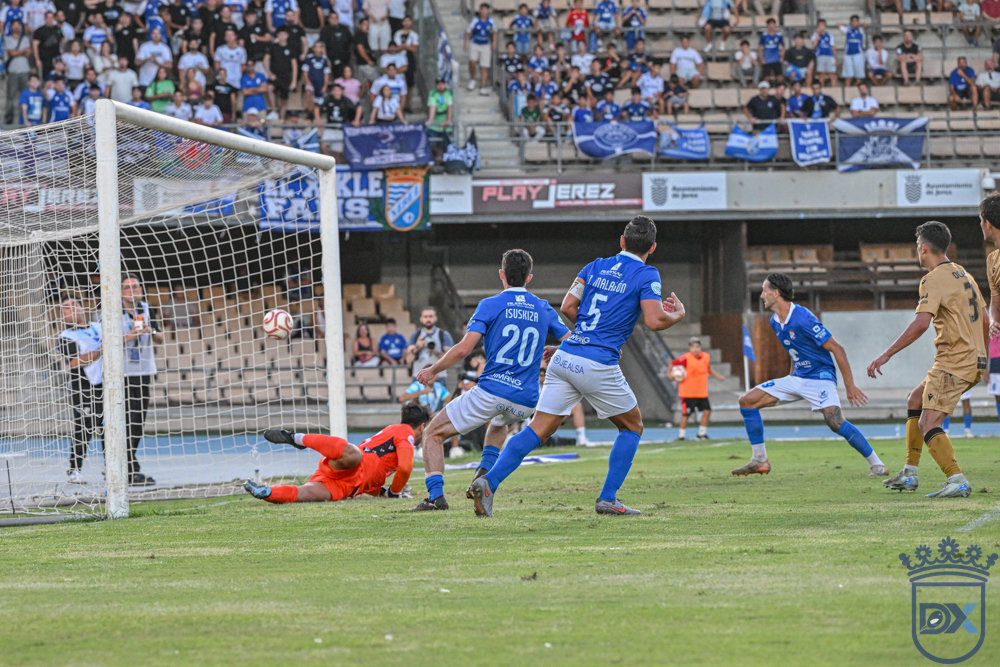

Xerez CD miss a penalty in the 94th minute and seal their first league defeat against Badajoz
 Xerez CD
Xerez CD
Photo: Diario XerecistaThe incidents recorded hours earlier in La Plazuela between fans of both sides clouded a day that had already begun full of emotion with the tribute to Borja Ferrer, the former blue-and-white player who died this summer
JEREZ. Football sometimes punishes the small details with real cruelty. And Xerez CD found that out in the worst way possible on a night at Chapín, when Rubén Mesa sent his spot kick straight into Tienza's hands in the 94th minute, burying any chance of rescuing a point that the blue-and-white comeback seemed to have deserved. Xavi Molist's side lost 1-2 to CD Badajoz, the executioner of a league start that has now yielded just one point out of six.
Emotion beforehand and shadows from outside the game
The day began tinged with feeling. Before kick-off, the stadium paid a heartfelt tribute to the much-missed Borja Ferrer, a former player at the club who died during the summer, in a ceremony that moved those present. A minute's silence was also held in memory of all the Xerecista supporters who passed away during the last season, in a build-up full of reflection.

Photo: Diario XerecistaNot everything off the pitch was good news, however. Hours before the game, it is impossible not to regret the incidents involving supporters of both sides in La Plazuela, an episode that soured the build-up to a regional derby played amid huge expectation, and a reminder that passion, badly channelled, can lead to unwanted events that have nothing to do with sport.
Surprises in the starting eleven
Xavi Molist made unexpected changes to his line-up, bringing Josete into the centre of defence alongside Moi and dropping Manu Galán to the bench after he started the previous week. The midfield was unchanged with Raúl López, Isuskiza and Jaime López, while on the left of the attack the Catalan coach went for Zelu ahead of Zequi. Óscar Lorenzo kept his place on the right and Rubén Mesa continued as the reference point up front.
A script that went wrong early
The hosts hinted at their intentions from the off, first through a Chacartegui cross that ended in a corner as Jaime López was about to shoot, and then with a long-range effort from the same midfielder that went just past the right-hand post of the Badajoz goal.
The game was a tight one, with both blocks well organised and notable difficulty stringing passes together. Molist's players tried to progress with diagonal balls towards Lorenzo and Chacartegui, with Zelu drifting inside, while the Extremadura side built up calmly, although Josete dealt comfortably with Álex Alegría in every individual duel.

Photo: Diario XerecistaBadajoz strike with very little
Jorge Barba warmed up with two long-range attempts —one wide of Pantoja's left-hand post and another with no danger— until at the third he forced the Madrid-born keeper to stretch to the top corner and turn it behind for a corner. From that very corner, Jesús Sánchez arrived unmarked after a poor clearance to connect with an unstoppable header that crept in by the post. A goal that sums up the evening well: the visitors needed very little to strike first.
That blow left the Deportivo reeling, unable to raise their intensity or find answers. The scare could have been worse after a perfectly executed Badajoz counter-attack: Manu Hernández received the ball inside the box, beat Moi with a cut-back and, with the goal already being celebrated, Josete appeared to divert the shot behind for a corner, an intervention that drew the first murmurs of disapproval from the stands.
The hosts' ball circulation became laboured and predictable. Zelu could find no gaps and Óscar Lorenzo frustrated the crowd with his insistence on dribbling rather than crossing into the box. The only attacking option ended up being the ball hung towards Chacartegui, although the opposition defence, well marshalled by Sanlúcar-born Lolo González, neutralised every attempt.
A half-hearted response after the break
Xavi Molist made two changes as soon as the second half began: Zequi replaced Zelu and Jaime Fernández took the place of an unfortunate Óscar Lorenzo. A change of personnel on the flanks, without altering the system.
The Deportivo came out with a different gear and won two corners in barely sixty seconds, cleared by the Extremadura defence amid a tangle of legs. In the 49th minute, referee González Sánchez disallowed an equaliser from Jaime López after a fine move with Zequi, judging that the Sevillian had handled it in the finish.
The second blow, again with astonishing ease
The blue-and-whites were showing a different face, biting into every second ball, enough to reignite the Chapín faithful. Tienza kept out the equaliser with a prodigious save from a low Rubén Mesa shot, during the hosts' best spell. Pushing forward, however, left gaps behind the defence, a motorway for the visitors' transitions.
And that is where the second blow came from. A measured Jorge Barba cross from the right wing found the far post, where Manu Hernández won his position against Guille Campos to beat Pantoja, who got a touch on the ball but could not keep it out. Once again, a goal built with scant resources by the visitors, leaving a deathly silence in the stands, broken only by the chants of the Badajoz supporters.

Photo: Diario XerecistaDespite the setback, Tienza shone again to deny the 1-2 with a feline dive after a Jaime López header, and immediately afterwards held another header from Isuskiza.
The comeback that fell short
Guille Campos went close after a good assist from Zequi, running once more into the wall that Tienza turned out to be, who sent the ball behind for a corner. From that very set piece, Josete and Isuskiza between them finally pierced the visiting goal to cut the deficit.

Photo: Diario XerecistaMoments later, Zequi had the equaliser on his boot, but his shot went wide of the left-hand post. Xavi Molist used up his options, bringing on Chuma to add another reference point up front and Mario Peregrina to provide control in midfield, withdrawing Raúl López and Jaime López. The Jerez side had another clear chance after Jaime Fernández drove to the byline, although his cut-back was imprecise with Rubén Mesa waiting unmarked to finish. In the closing stages, Chuma received the ball inside the box with Rubén Mesa as the reference point, but his weak shot was repelled by Tienza without too much trouble. Straight afterwards, the Madrid-born goalkeeper and the crossbar combined to prevent the equaliser following a colossal strike from Josete.
The hosts turned into a whirlwind in the closing minutes, with Zequi carrying the attacking load on his shoulders and becoming the most incisive player in the blue-and-white side. Isuskiza tried again without luck, running into Tienza once more. Then came stoppage time, with Jaime Fernández winning a penalty that Rubén Mesa took with a poorly struck effort that the Extremadura keeper saved without great difficulty. There was no time for anything more.
Immediate urgency
Xerez CD drop three points at home, have collected just one of the six on offer and will host Don Benito next Sunday, a side that has won both of its opening two fixtures. The pressure, with the competition barely under way, is already knocking on Chapín's door.
Match details
Xerez CD: Carlos Pantoja, Guille Campos, Moi, Josete (Julito, 90'), Chacartegui, Raúl López (Mario Peregrina, 67'), Isuskiza, Jaime López (Chuma, 67'), Zelu (Zequi, 46'), Óscar Lorenzo (Jaime Fernández, 46') and Rubén Mesa.
CD Badajoz: Sergio Tienza, Edu López, Jesús Ocaña, Lolo González, Mario Gómez, Jesús Sánchez, Álex Alegría (Álex Alegría, 62'), Jorge Barba (Gus, 62'), Guille Perero (Nacho, 69'), Carlos Beitia (Bermúdez, 69') and Manu Hernández (Íker, 84').
Goals: 0-1 (17') Jesús Sánchez. 0-2 (56') Manu Hernández. 1-2 (67') Isuskiza.
Referee: González Sánchez, of the Málaga committee. Booked visiting players Beitia, Jesús Sánchez, Gus and Nacho.
Notes: Second-round fixture in Group 4 of Segunda RFEF played at the Municipal de Chapín, before 8,123 spectators according to the scoreboard. Before the game a tribute was paid to former player Borja Ferrer, who died last summer, and a minute's silence was held in memory of the Xerecista supporters who passed away during the last season. Hours before the match, incidents between supporters of both sides were recorded in La Plazuela, events that it is impossible not to regret.
🇪🇸 Leer en español ← Back to home